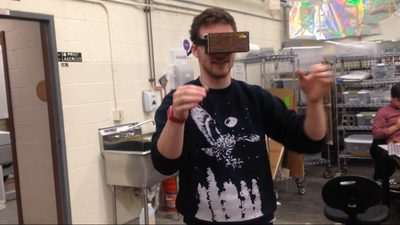
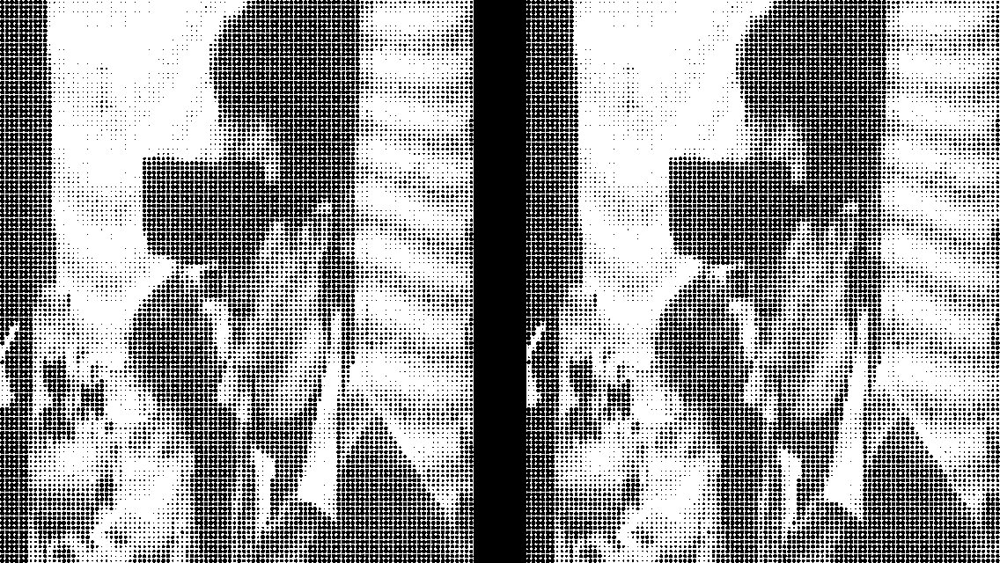

Interactive Object
2014 – 2015
Woodworking
Optics
Processing
Interactive
A hand-built stereoscopic viewer that pairs handcrafted physical form with computer-generated imagery. Two optical lenses set in a wooden housing present slightly offset images to each eye; the brain fuses them into a single three-dimensional perception that exists nowhere in physical space.
The piece is a meditation on perception: the stereoscopic image is entirely real as an experience, yet entirely constructed. The wooden object in your hands is the most honest thing in the room.
The stereoscope was built for Visual Power, a social, app-based augmented-reality experience. It only worked because nearly everyone already carries a smartphone. More expensive AR hardware such as the Oculus Rift was tried and set aside: the project became an iPhone app plus a stereoscope designed to be built by anyone, so that a group of people could download the app and the plans and have the experience themselves.

